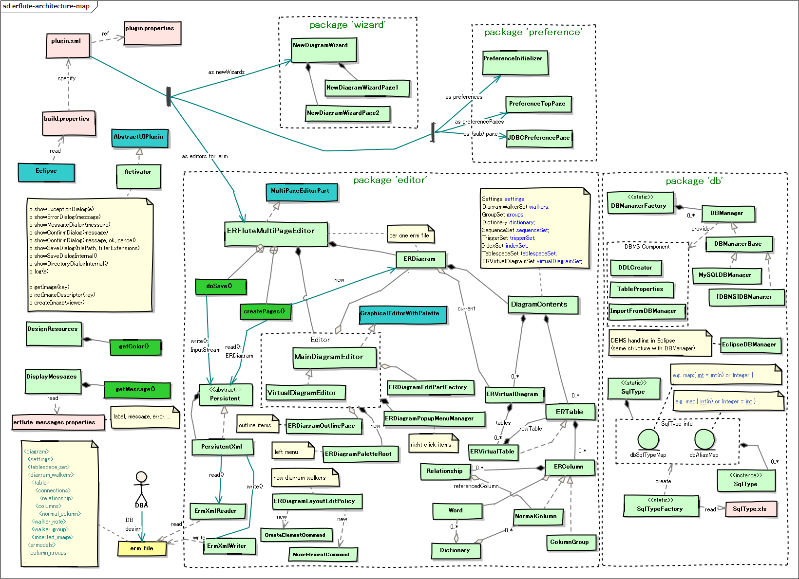

ERFlute
DBFluteプロジェクトが提供するライブラリ ERFlute のページ。
${indexlist}ERFluteとは？
TODO jflute まだできてません！
Eclipse Pluginとして作成されたERDツールです。
ERMaster をフォークした ERMaster-b をフォークしています。
スタートアップ＆インクリメンタル開発のために
スタートアップ＆インクリメンタル開発では、テーブルが少ない時代から大規模な時代を経て、様々な特徴的な悩みが発生します。 複数人で同時にDB設計をすることも想定されますし、ドキュメント整備の時間もなかなかとれません。 チームでの議論やレビューのために正確な ERD は欲しいが、変更も激しく本番との同期も難しいです。
その中でぜひやりたい "ERDを描いてDDLを出力してDBを作ってクラスを自動生成して...(の繰り返し)" という ERDドリブンスタイル を支えるツールとして、 ERFlute が活躍できればいいなと思っています。
オープンソースとして
スタートアップ＆インクリメンタル開発では、高額なERDツールも買えません。 複数人でDB設計をやるとなるとライセンス料も大きなものとなります。それゆえにオープンソースのERDツールという存在が大切です。
ただ、オープンソースのERDツールの開発は容易なことではなく、継続的な開発は非常に厳しいものです。 それゆえ、みんなでメンテナンスができるような構成にすることが大切で、シンプルな状態をキープしていく必要があります。
そこで、ERFluteの開発テーマは、以下のようになっています。
- プルリクをもらいやすくするために、コードをできるだけシンプルに
- 利用頻度の低い機能をばっさり削除 (他のツールでできることは他のツールに任せる)
- その代わり、ERDのコア機能での細かなユーザビリティを向上に集中
フォークの歴史
ERMasterの良いところ
非常に素晴らしいツールです。オープンソースのERDツールで、これほどの品質で提供されているのは本当に素敵なことです。 (開発されたorg.insightechの方々には感謝しています)
- グラフィック的な表現力の高さ e.g. リレーションシップやテーブル背景色など
- 検索性能の高さ e.g. テーブル検索など
- 豊富なDBMS対応 e.g. DDL出力など
- 細かい現場フィット e.g. ノート、カテゴリ、DBコメント出力など数え切れず
ERMasterのあともうちょい
もうちょいこうなると嬉しいと思うところです。
- テーブル数が多くなると動きが遅くなる (大規模開発対応)
- 保存されるXMLのランダム性が高く、マージができない (複数人開発対応)
- 翻訳機能や辞書機能の扱いが難しい (振り回されることの方が多い...要らないという声も)
- 利用頻度の低い機能がたくさんありコードが膨大で拡張が難しい
- データ型周りのロジックが複雑でちょっとした型の追加修正が難しい
ERMaster-bの良いところ
そして、フォークされた ERMaster-b は、あともうちょいのところをがだいぶ改善されています。 (開発されたnaoki-iwamiさんには感謝しています)
- 大量テーブルでも動きが遅くならない
- 仮装モデルの導入で、図がでかすぎる問題も解決
- アウトライン(ctrl+O)による手軽なテーブル検索
- テーブルダイアログやカラムダイアログをEnterやSpaceで開く
- リレーションシップを引いた時のデフォルトカージナリティを0..*に
- リレーションシップを引いた時のデフォルトFK名を設定 (無名FK問題の回避)
- MySQLにて、データ型のリストボックスで、よく利用される型だけ優先表示
- DDL出力でFKの無効化がデフォルトでされてしまうのを抑制
- (あとは、いろいろありすぎて忘れました...)
ERMaster-bのあともうちょい
主に、仮装モデルを導入したことによる影響です。
- メインモデルでノートやカテゴリが使えない
- 描画がちょっと変になることがある
そして、ERFluteは...
ERMaster でのあともうちょい、ERMaster-b でのあともうちょいを直し、 シンプル性をキープしながら、スタートアップ＆インクリメンタル開発でフィットしやすいERDツールを目指していきます。
まずは引き算の修正をしています。
- 翻訳機能を削除
- 辞書機能を削除
- 変更履歴機能を削除
- Hibernateのクラス自動生成を削除
- HTML,Excel出力機能を削除
- 細かい使わなそうな機能を削除
- データ型マッピングのシンプル化
- コードのがっつりリファクタリング
そして、ポイントとなる修正をしています。
- XMLの順序固定化
- XMLのシンプル化
コミッタ向け情報
Githubリポジトリ
- Github Page
- https://github.com/dbflute-session/erflute
- Pull Request Branch
- develop
コンパイル環境
- Eclipse Version
- Eclipse-4.4.2 (Luna)
- Java Version
- Java7
ERFluteアーキテクチャマップ
ERFluteアーキテクチャマップ 
{kind=link}
{kind=link}